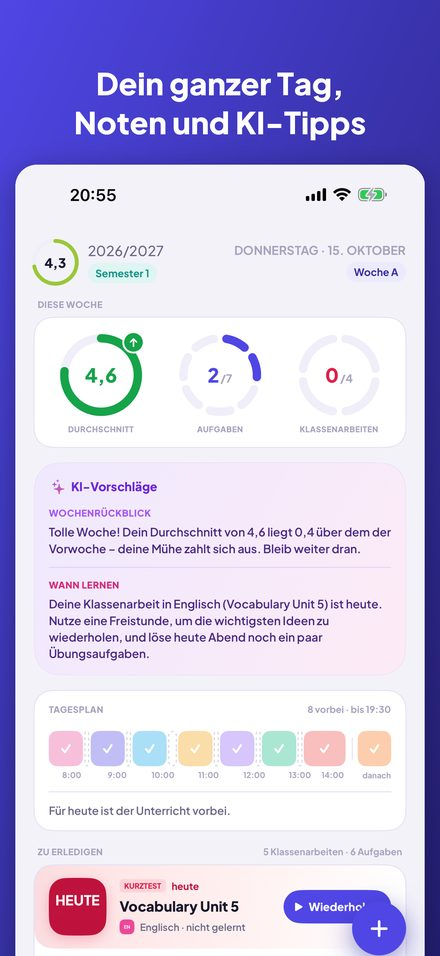
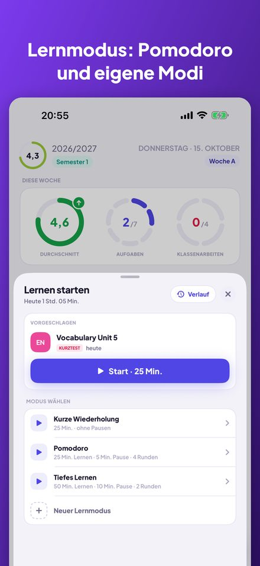
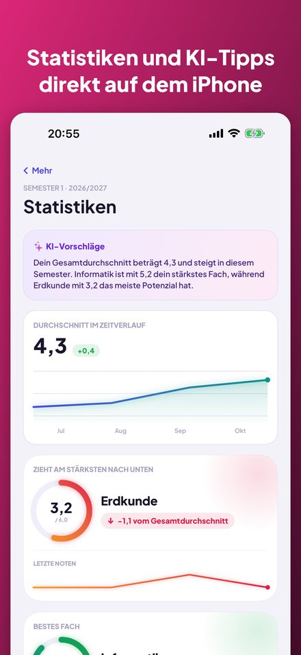
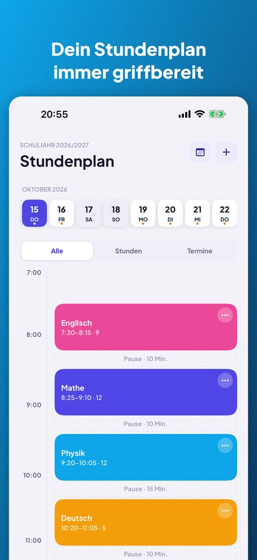
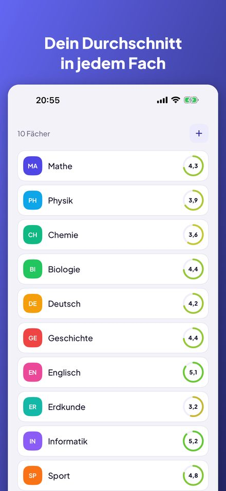
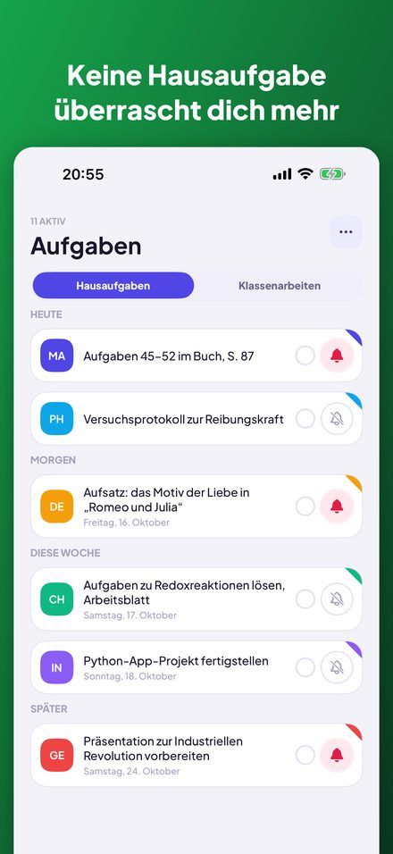

Kajet ist ein Planer für Schule und Studium. Dein ganzer Tag auf einen Blick, Noten mit Durchschnitt, Hausaufgaben und Klassenarbeiten mit Erinnerungen und ein Lern-Timer mit Pomodoro. Ohne Konto, ohne Werbung.






Ringe für den Wochendurchschnitt, Aufgaben und Klassenarbeiten, eine Zeitleiste der heutigen Stunden und eine To-do-Liste, die du mit einem Tipp abhakst.
Tages- und Wochenansicht, A- und B-Wochen, ausgefallene Stunden, Vertretungen, Raumwechsel und Termine nach der Schule mit Erinnerung ans Losgehen.
Einfacher oder gewichteter Durchschnitt mit eigenen Kategorien, Verbesserungen und Kommentaren. Statistiken zeigen deinen Trend, dein bestes Fach und das, das dich nach unten zieht.
ECTS-Punkte, Abschlussnoten, der ECTS-gewichtete Durchschnitt und deine eigene Stipendiengrenze samt den Noten, die dir noch fehlen.
Nach heute, morgen und dieser Woche gruppiert, mit Erinnerungen einen oder drei Tage vorher. Aus einer Klassenarbeit machst du in einem Schritt eine Note.
Ein Timer mit eigenen Modi: Countdown oder Pomodoro mit Runden und Pausen. Verknüpfe eine Sitzung mit einer Klassenarbeit und sieh deinen Lernverlauf.
Die nächste Stunde auf dem Home- und dem Sperrbildschirm. Frag Siri nach der nächsten Stunde, den Hausaufgaben für heute oder deinem Durchschnitt, oder füge per Sprache eine Note hinzu.
Kein Konto, keine Werbung, und deine Daten bleiben auf deinem iPhone. Die optionalen KI-Tipps laufen komplett auf dem Gerät mit Apple Intelligence.
Entwickelt mit Blick auf das polnische Schul- und Hochschulsystem (Noten 1–6, die Hochschulskala 2,0–5,0, ECTS), aber überall nutzbar. Verfügbar auf Englisch, Polnisch, Deutsch, Französisch, Spanisch, Italienisch, Japanisch und Chinesisch. Für das iPhone mit iOS 17 oder neuer; die KI-Tipps brauchen iOS 26 und Apple Intelligence.